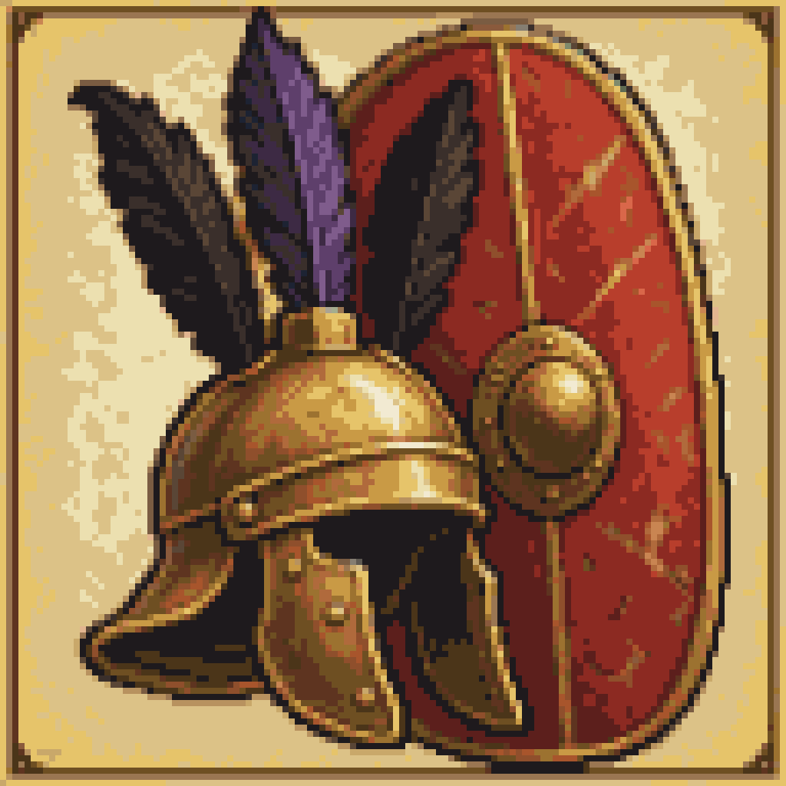
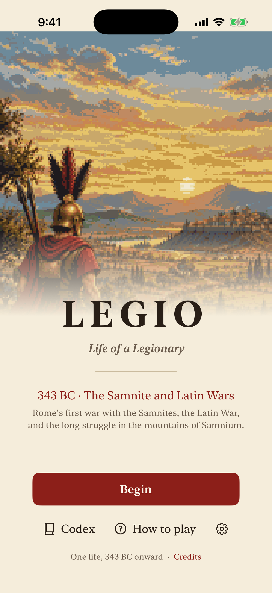
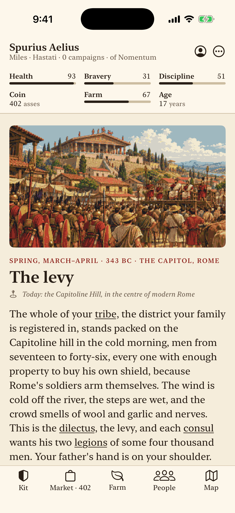
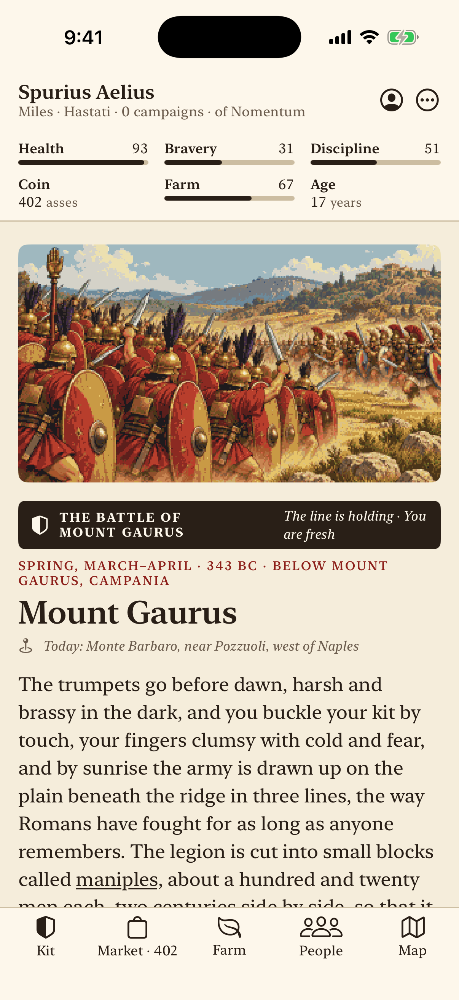
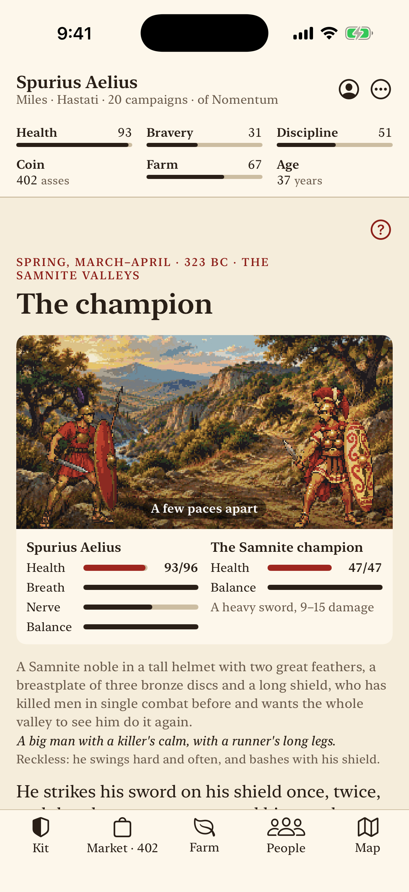
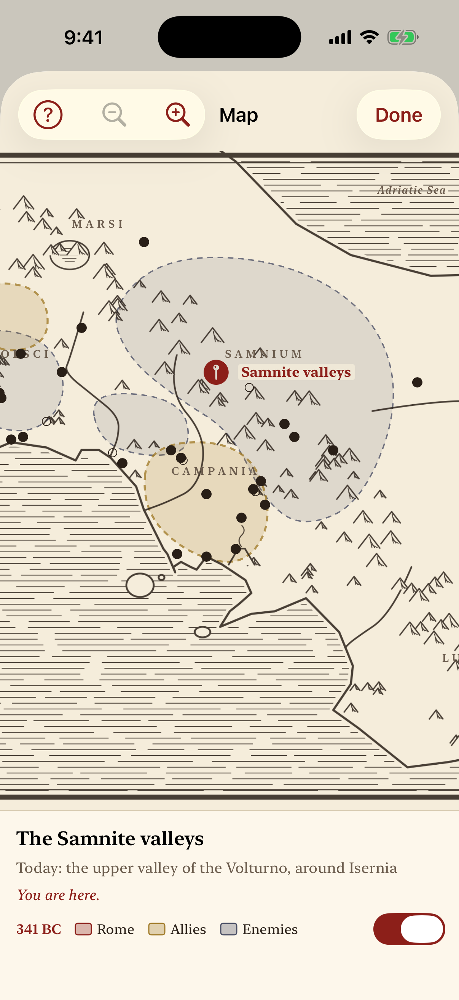
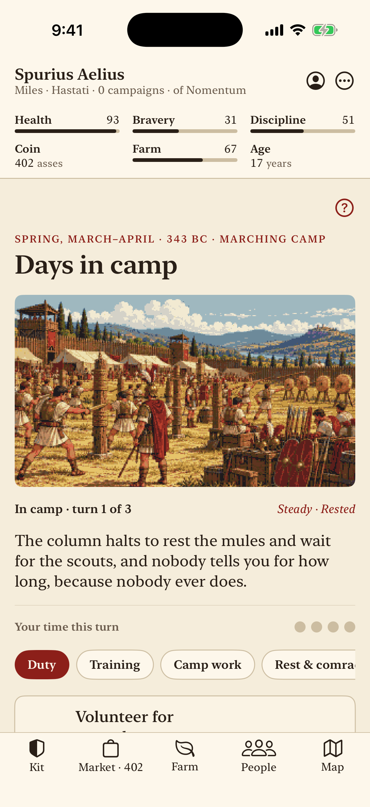
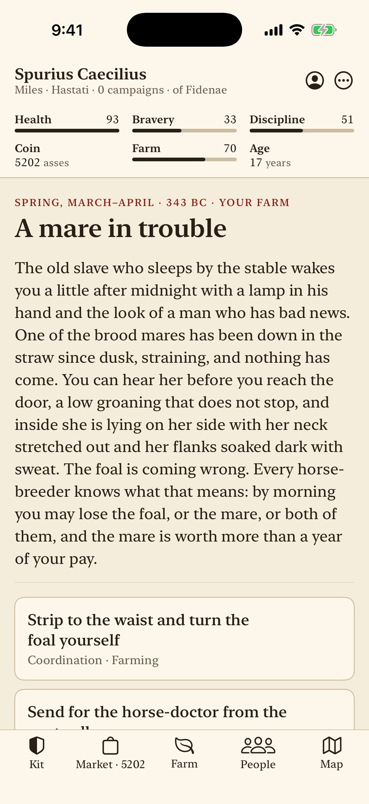
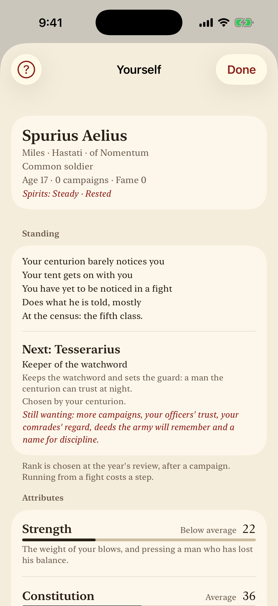

Life of a Legionary. A story-driven life sim for iPhone: live one Roman soldier's life through the wars of the Republic, and try to come home.
It is the spring of 343 BC. Rome is a hard little city of farmers, and it is going to war with the Samnites in the mountains to the south. You are seventeen, your family has a farm, and your name is on the levy list. Legio follows one citizen-soldier through the wars that made Rome the master of Italy, season by season: the marches and battles, the men who share your tent, the farm waiting at home, and the long climb through the ranks.
The story follows real events from 343 to 314 BC, among them the battle of Mount Gaurus, the mutiny of 342, the Latin War, the Roman surrender at the Caudine Forks and the defeat at Lautulae. Your choices decide how you come through them. Battles, festering wounds and camp fever all kill, and when you fall, your son or brother can take up your shield and carry the family on.
Each scene carries a note on what really happened, naming the ancient source or marking the scene as reconstructed. Every Roman term is explained where you meet it and every place carries its modern name, so a player needs no history to begin.
A story-driven iPhone life sim in which you live, and probably die, as a Roman legionary in the 4th century BC.
Rank is earned again every year, from common soldier to optio, centurion and tribune. The family's farm, debts, marriages and children carry on while you march.
Every choice says what it tests, such as Strength, Sword or Charisma, but never your chances. Nine attributes and five skills grow with what you actually do.
Duels are turn-based and every roll is shown on screen. Your breath, nerve, balance and wounds change what you can do next, and in the battle line your whole tent fights as one file.
Each opponent is rolled from his experience and his people, and follows the same rules you do. One spearman is a frightened boy and the next a hard old veteran.
Stand in the line, command a century, or stand for election as a military tribune. Born to a family of horse-breeders, you ride with the cavalry and raise war horses on the farm at home.
Death is common. An heir inherits the farm, part of the coin and something of the family's name, and the family record keeps every man who served.
Grow up a farmer's son, a fisherman's, a smith's or a freedman's, among a dozen upbringings, each with its own first scenes at home before the levy.
Scenes draw on Livy, Polybius and other ancient writers, and say plainly when a detail is reconstructed. A Codex of everything you learn is kept across every life.
A hand-drawn map of Italy shows where the year has taken you, the battles you fought, and who held the land, year by year.
Music for every part of a life, from the farm and the march to the battle line, the triumph and the lament, with stings for promotions, wounds, births and deaths.








Full-size files are in the kit's screenshots folder (1206 × 2622), free to use in coverage. Scroll sideways to see them all.
For review copies, interviews or anything else, write to jaxonfn@gmail.com.